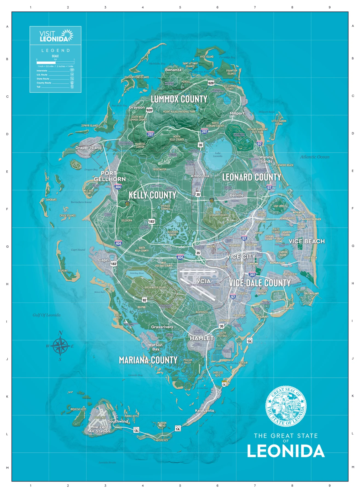

Leonida: el marco de la aventura
Leonida es el estado ficticio inspirado en Florida que conecta las distintas regiones de GTA VI. La escala estatal permite que la identidad del juego cambie al alejarse de la ciudad: tráfico, arquitectura, paisaje y cultura local ayudan a contar dónde estás. El material promocional oficial deja claro que Vice City es una pieza central, pero no la totalidad del territorio. El mapa descargable de Rockstar es la referencia más segura para los nombres publicados.

Vice City y la vida urbana
La Vice City de esta entrega es una reinterpretación moderna de la ciudad que protagonizó GTA: Vice City. El neón, las playas y los barrios reconocibles conviven con referencias contemporáneas a redes sociales, turismo y vida cotidiana. Conviene observar los puntos de referencia y los cambios entre zonas en vez de confiar únicamente en capturas de tráiler: las imágenes oficiales enseñan lugares concretos, pero el acceso y las actividades se comprueban dentro del juego.
Regiones que aparecen en el material oficial
Rockstar identifica Leonida Keys, Port Gellhorn, Ambrosia, Grassrivers y Mount Kalaga National Park entre sus postales y recursos de prensa. Los nombres sugieren ambientes costeros, industriales, pantanosos y montañosos, aunque el detalle útil para jugar depende de la exploración real. Usa esas etiquetas como puntos de partida, no como promesa de biomas o misiones específicas. El mapa oficial puede actualizarse, por lo que merece la pena volver a la fuente tras parches.
Cómo aprovechar el mapa sin spoilers
Empieza por fijar lugares que ya conoces y completa el resto según descubras el mundo. Si usas una aplicación comunitaria, revisa quién la mantiene y si está actualizada a la versión del juego. Para coleccionables o misiones, comprueba que las coordenadas y condiciones corresponden a tu plataforma. Los mapas filtrados o elaborados antes del lanzamiento pueden contener hipótesis acertadas, pero no son una fuente oficial ni una guía fiable por defecto.
Lo que aún no conviene dar por hecho
Un mapa promocional no demuestra que toda la superficie sea transitable ni que cada edificio se pueda visitar. Tampoco permite deducir tiempos de viaje, densidad de encargos o contenido futuro. Esas respuestas pertenecen al juego y a documentación posterior. La cobertura editorial debe corregir los mapas y ubicaciones si una actualización oficial cambia la información, y marcar con fecha cualquier mapa de usuarios que no haya sido contrastado.
Leer la geografía como una invitación a explorar
Conviene recorrer Leonida por escalas: primero identifica una zona amplia, después sigue una vía o costa y finalmente comprueba los puntos que encuentres dentro del juego. Las postales oficiales dan una impresión de paisaje, no un mapa de navegación con cada calle etiquetada. Una ruta puede parecer cercana en una imagen y requerir rodeos o transporte distinto. Registra lo que observas desde tu propia sesión, y distingue hallazgos jugables de arte promocional para que la guía siga siendo reproducible.
Una ficha útil para documentar lugares
Si creas una nota de exploración, apunta el nombre que aparece en el mapa, el sistema usado, la versión del juego y si el punto se descubrió durante una misión o en exploración libre. Una captura limpia puede ayudar a ubicarlo, pero no incluyas minimapa o diálogo que revele la trama sin avisar. Este método facilita corregir una ubicación si una actualización cambia el acceso y evita que una lista comunitaria convierta una aproximación visual en coordenada exacta.
Diferencia entre tamaño y variedad
La extensión de un mapa no determina por sí sola cuánto ofrece. Para evaluar Leonida, fíjate en cuántos ambientes se sienten distintos, qué transiciones hay entre ellos y si el viaje introduce nuevos detalles. Comparar kilómetros cuadrados con otra entrega solo tiene sentido si se define qué cuenta como terreno jugable, superficie acuática y zonas inaccesibles. Sin ese criterio, una cifra espectacular no ayuda al lector a decidir si le gustará explorar.
Una guía para descubrir sin seguir una ruta ajena
El mapa puede invitar a completar todo, pero no necesitas visitar cada punto para disfrutar la aventura. Elige una zona por curiosidad y deja que el trayecto revele otras. Si usas una lista de lugares de la comunidad, abre solo el dato que necesitas y fíjate si lleva etiquetas de spoiler. Los mapas con puntos de misión, coleccionables y secretos pueden revelar escenas aunque el título parezca inocuo. Cuando aportes una localización, añade una descripción corta y una referencia a la fuente, pero evita publicar el contenido de una misión en una página pensada para orientación general. Así conviven exploración libre y ayuda práctica, con el control de spoilers en manos del lector.
En resumen
Para conocer Leonida, combina el mapa oficial con tus propios descubrimientos y registra los lugares que te interesen sin spoilear la historia. Nuestra guía de personajes y el repaso de los tráileres amplían el contexto de las regiones que se han presentado.
Preguntas frecuentes
¿Qué estado aparece en GTA VI?
Leonida, un estado ficticio inspirado en Florida.
¿Vice City es todo el mapa?
No. Vice City es una región destacada dentro de Leonida.
¿El mapa oficial está completo?
Rockstar ha publicado recursos oficiales, pero las actividades y límites jugables deben confirmarse dentro del juego.
¿Son fiables los mapas filtrados?
No por sí solos. Hay que tratarlos como material no oficial y contrastar cada ubicación.
Fuentes y lecturas
Consulta la fuente original cuando exista y su fecha; los anuncios, el catálogo y las guías de terceros pueden cambiar.